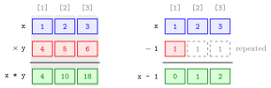

Vectorized Operations¶
Definition¶
An operation is vectorized when it is applied to a whole vector at once, element by element, without a separate command for each element. For two numeric vectors x and y of the same length , the arithmetic operators +, -, *, / and ^ pair the elements by position: x * y is the vector with elements for , and the result again has length .
When one side is a single number, it is applied to every element: c(1, 2, 3) - 1 gives 0 1 2. Many functions, such as sqrt(), log(), exp(), round() and abs(), are vectorized in the same way, and so are comparisons such as x > 4, which return one logical value per element.
In particular * is element-wise multiplication, not matrix multiplication.
Interpretation¶
Vectorization lets one line describe a calculation on a whole column of data: "multiply each price by its quantity" is simply price * qty. R lines the two vectors up position by position and computes all the results at once.

In the left panel of the figure (Example 3) each grey band holds the elements in the same position: , and give 4 10 18. In the right panel the single number 1 is repeated (dashed cells) and subtracted from every element of x. No element is ever paired with a different position.
For +, - and multiplication by a single number this is exactly vector addition and scalar multiplication from linear algebra. x * y is different: it is not the inner product (that is sum(x * y), a single number) and not the matrix product, which R writes as %*% (see Matrix Algebra in R). Vectorized code is also faster than an explicit loop over the elements, a point taken up in Loops versus Vectorization.
The condition is that corresponding positions must refer to the same observation. R pairs elements by position only; if two vectors list the same items in a different order, the result is wrong without any warning (Example 4). When the lengths differ, R repeats the shorter vector, which is vector recycling.
Key Results¶
- For vectors of equal length,
+,-,*,/and^work element by element, and the result has the same length. - A single number combined with a vector is applied to every element.
*is element-wise multiplication; the matrix product is%*%, and the inner product of two numeric vectors issum(x * y).- Many built-in functions (
sqrt(),log(),exp(),round(),abs()) and the comparison operators are vectorized. - R pairs by position only, so the order of the observations must match.
Examples¶
1. Element-wise arithmetic.
2. A single number and vectorized functions.
c(1, 2, 3) - 1
#> [1] 0 1 2
2^c(1, 2, 3)
#> [1] 2 4 8
sqrt(c(1, 4, 9))
#> [1] 1 2 3
c(1, 5, 7) > 4
#> [1] FALSE TRUE TRUE
3. Element-wise product versus inner product.
x * y keeps three numbers; adding them up gives the inner product .
4. Pitfall: vectors in a different order. Prices are listed for apples, bread and cheese, but the quantities were typed in the order bread, cheese, apples.
price <- c(2, 5, 10) # apples, bread, cheese
qty <- c(1, 3, 2) # bread, cheese, apples
price * qty
#> [1] 2 15 20
sum(price * qty)
#> [1] 37
The correct bill pairs apples with 2, bread with 1 and cheese with 3: . R had no way to know, so it multiplied by position and gave 37.
Prerequisites¶
Related Concepts¶
- Vector Recycling
- Comparison Operators
- Loops versus Vectorization
- Matrix Algebra in R
- Vector Addition
- Scalar Multiplication
- Inner Product
Sources¶
- Programming for EOR · Week 1
- Lecture script Data Types and Structures (Part 2), part "Scalars & Vectors"; also Conditional Operations and Sequences (Week 2, Part 1) and Matrix operations, random numbers and optimisation (Week 5)
Aliases: vectorised operations, vectorization, element-wise arithmetic, element-wise operation, vectorized function Keywords: element-wise arithmetic, pairing by position, scalar and vector, element-wise multiplication
Last updated: 10 November 2026 16:43
Vectorized OperationsComparison OperatorsVectorized ifelse()Loops versus VectorizationMatrix Algebra in RVector RecyclingAtomic VectorFunction CallVector AdditionScalar MultiplicationInner Product